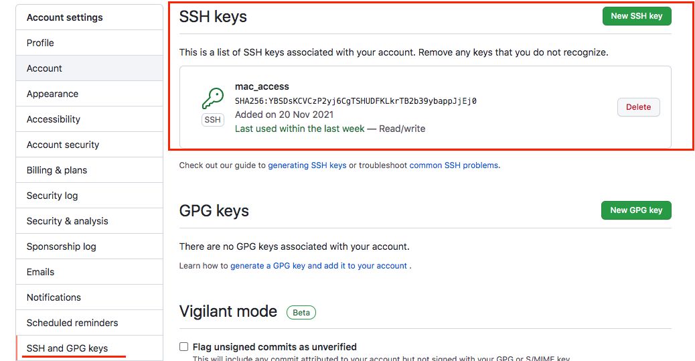

前言
公司也使用Github，導致會有一台電腦需要將程式碼上傳到不同GitHub帳號的煩惱，一開始試過直接設定 git config –global來切換帳號但是沒有成功，後來使用ssh（公私鑰）就ＯＫ了，因此來寫一下筆記。
1. 在電腦產生公鑰私鑰
1 | ssh-keygen -t rsa -C "your email" |
接下來會填入你想存放key-pair的路徑及設定密碼，我就是照原本預設路徑存放。存放完成會有id_rsa, id_rsa.pub， id_rsa.pub為公鑰，id_rsa為私鑰。
2. 把SSH-KEY(公鑰：.pub)貼到要操控的GitHub帳號上

3. 將私鑰加到ssh-agent中
1 | ssh-add ~/.ssh/id_rsa |
ssh-agent是什麼？
(一個作業系統內建幫忙管理 ssh keys 的背景程式，讓使用者只需要輸入一次密碼往後就可以用密鑰自動登入)
4. 新增/修改Config的檔案資料：在/.ssh裡面我原本沒有git config檔，所以直接新增一個新的。
1 | vi config |
1 | ----config裡面---- |
5. 測試是否連線成功：第一次連線會詢問你是否確定connecting，選擇yes，成功會顯示successfully的字樣～
1 | ssh -T git@github.com |
6. 實際用github操作repo測試
7. 取消原本global的設定
1 | git config --global --unset user.name |
完成之後再用 $git config --list指令查看，原本設定的 user.name & user.email就已經不見囉
可以在個別的專案再設定email, user$git config user.email "your email"$git config user.name "your name"
個人心得紀錄
目前把公司的設定ssh而已，另外一個帳號還是用http clone，不曉得之後會不會遇到什麼問題，可能可以觀察一下再做更新。另外公鑰私鑰的部分仍還需要多了解一些，下面放的另外兩篇文章會再看一下。
—
資料來源：
如何在一台電腦使用多個Git帳號
Security 你該知道所有關於 SSH 的那些事
ssh agent详解